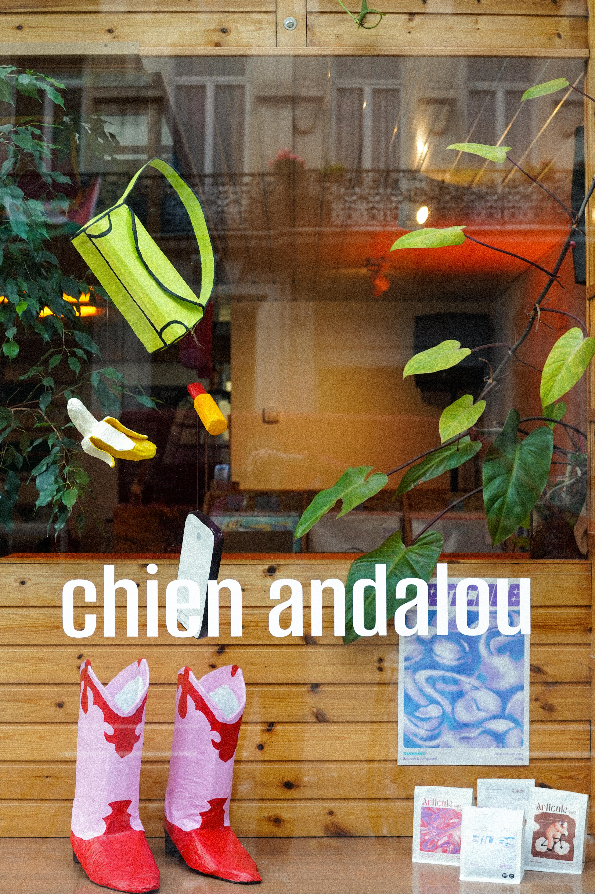
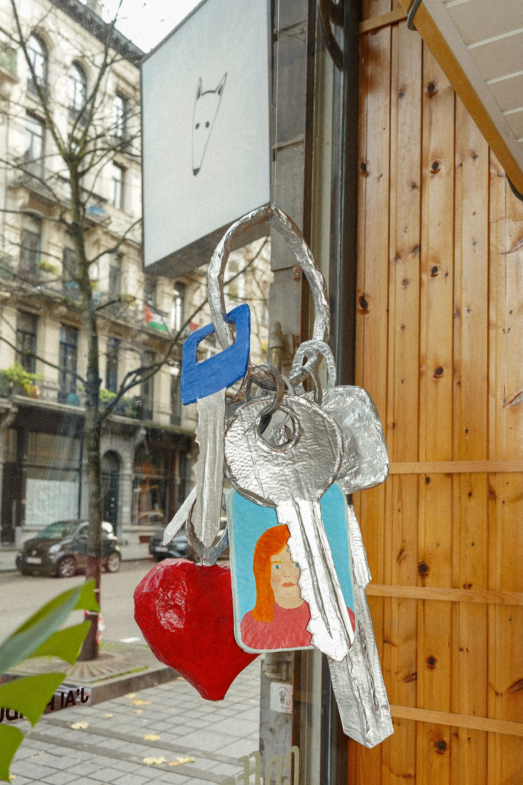
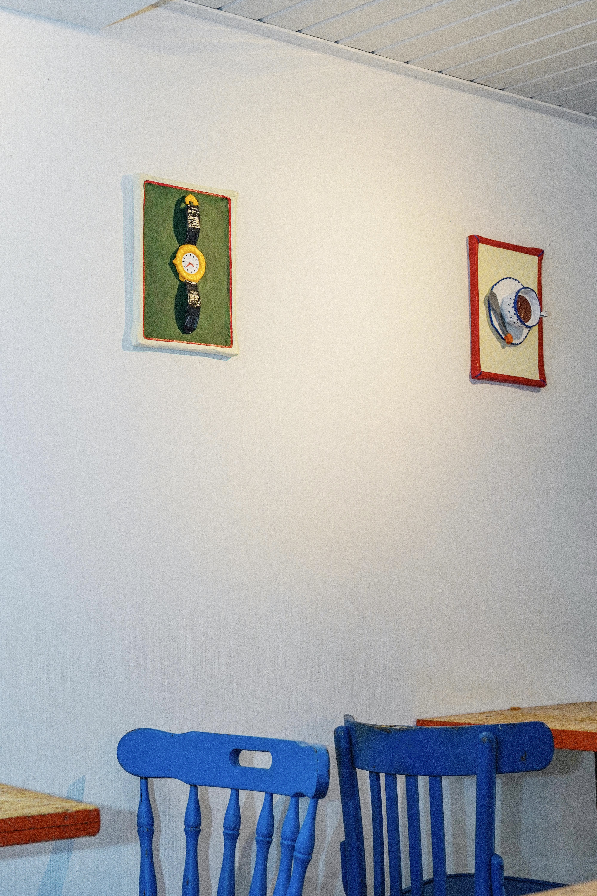
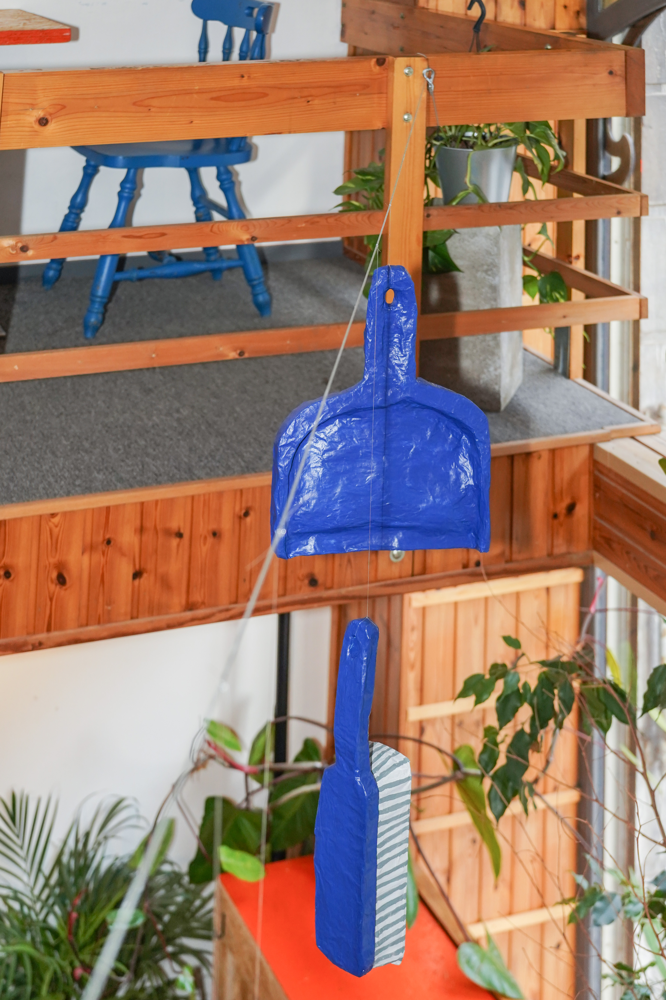
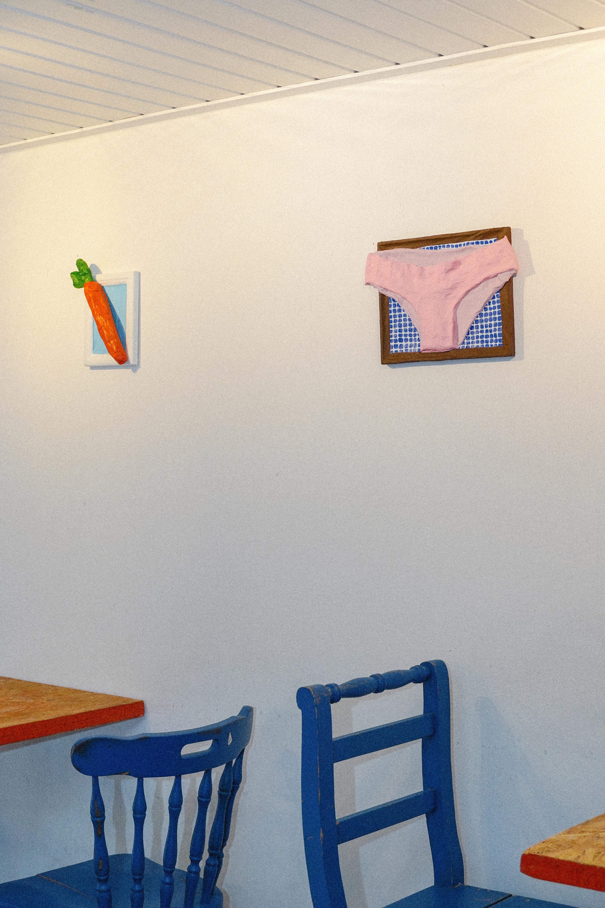
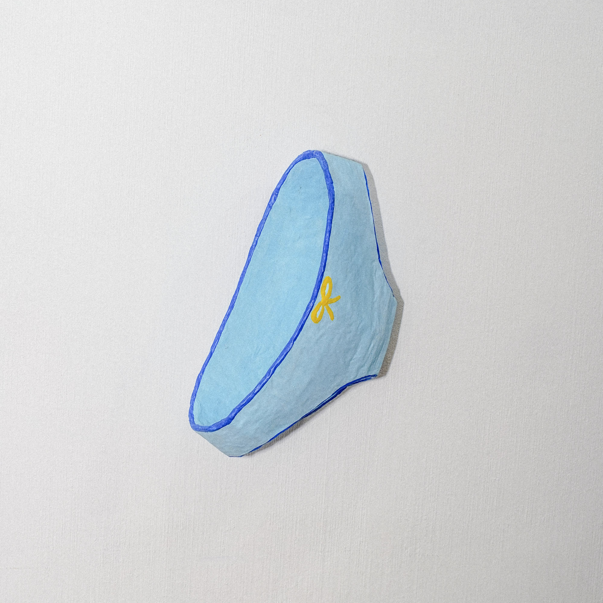
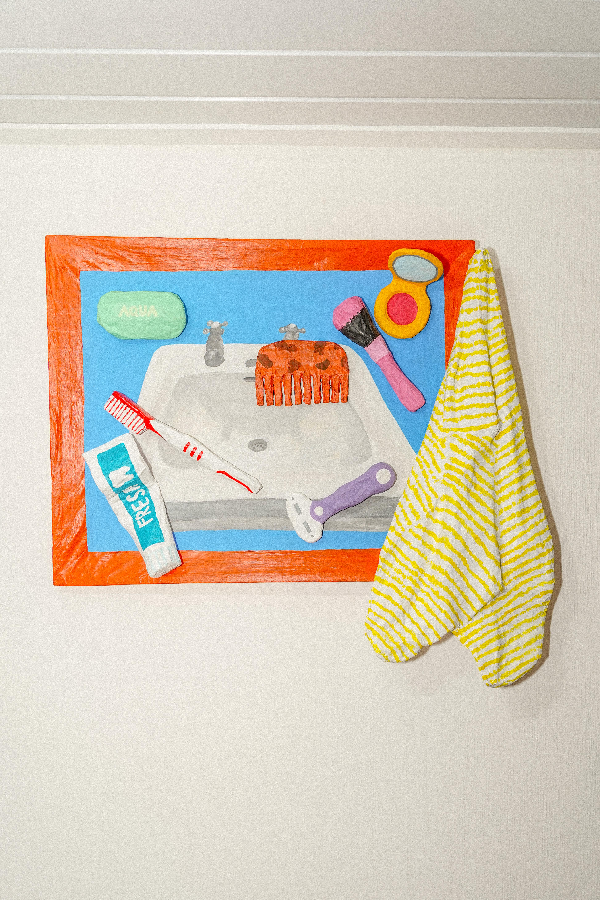
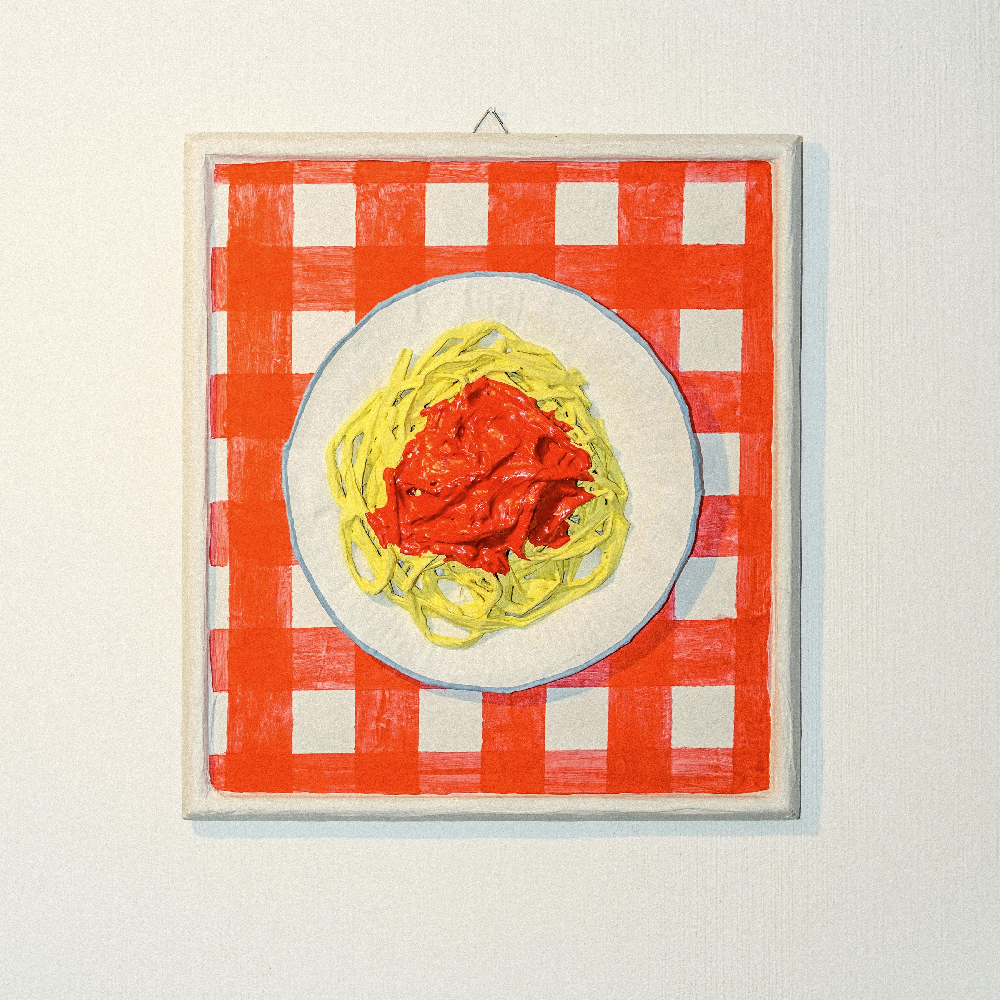
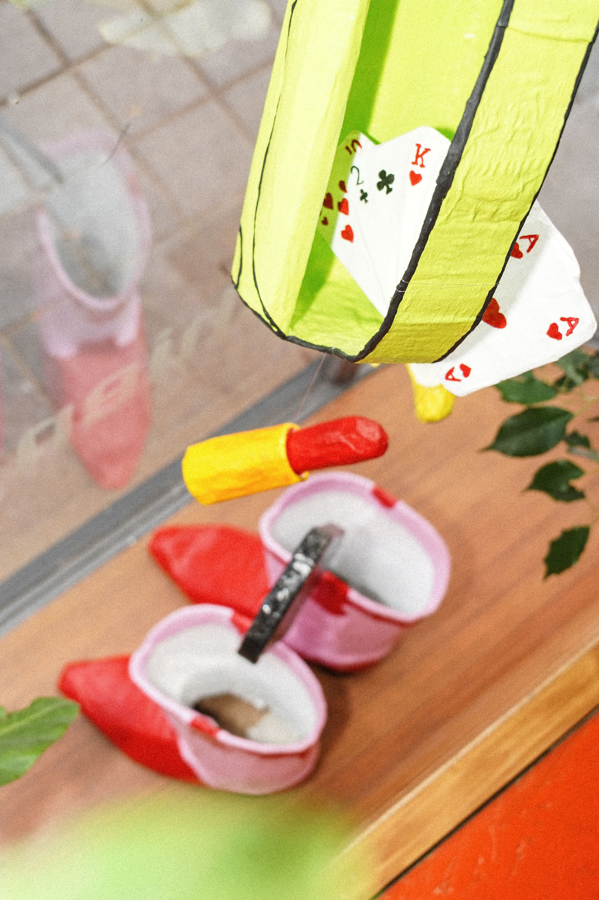
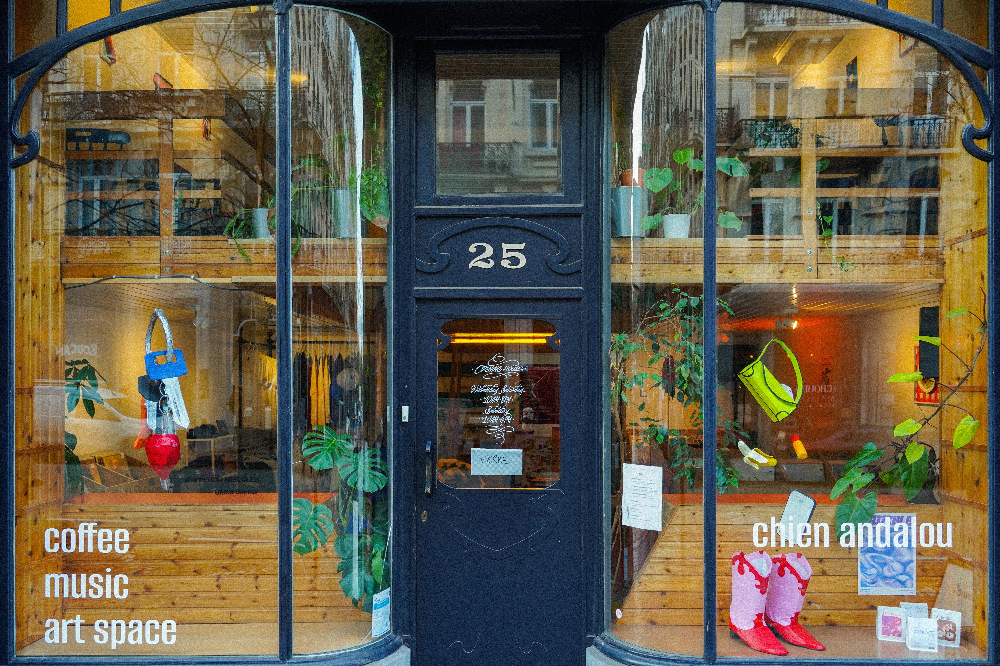

J'ai perdu mes clés. Est-ce que tu as déjà perdu tes clés, mangé des pâtes à la sauce tomate au point de finir avec la bouche orange, fumé une Marlboro, cassé un œuf ou dansé avec des bottes de cowboy roses ? Une exposition autour des gestes et des objets du quotidien, qui invite les visiteurs à renouer avec leurs propres souvenirs. Exposition personnelle au Chien Andalou, Bruxelles.









